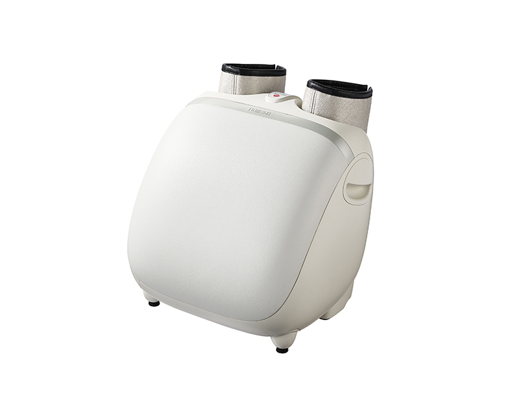
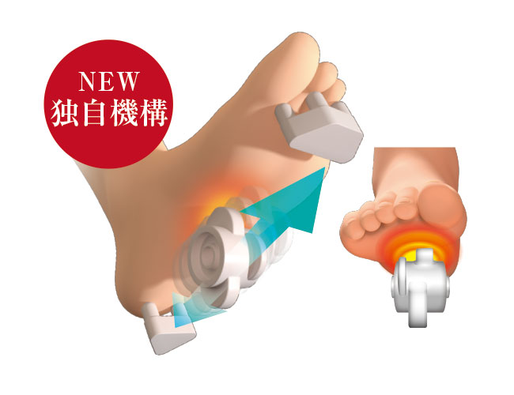
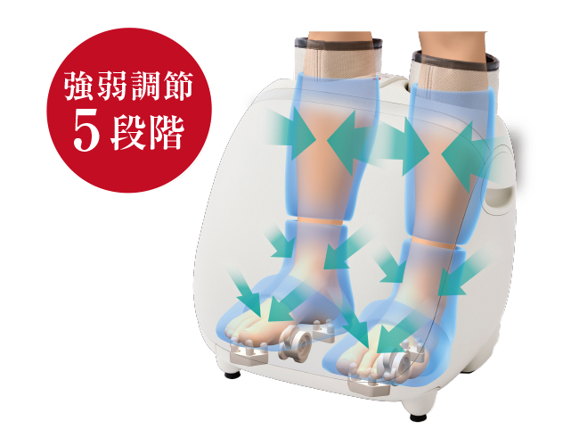
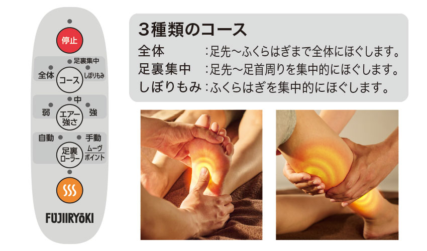
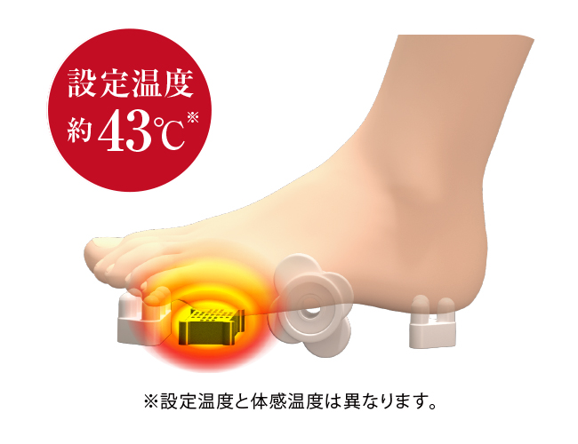
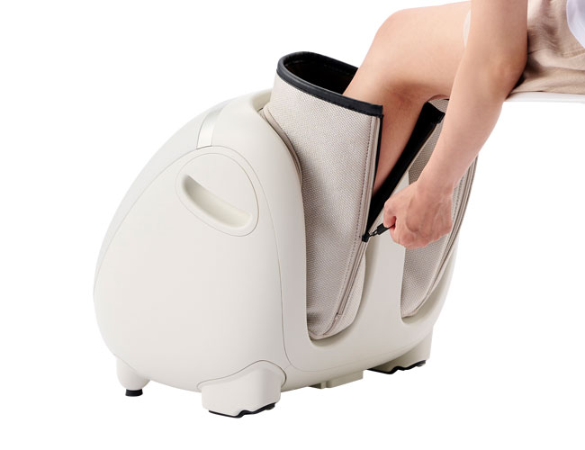
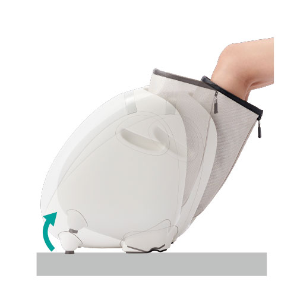

July 28, 2021
Fuji Medical Instrument Co., Ltd. (Headquarters: Osaka City, Osaka Prefecture), a comprehensive manufacturer of beauty and health, has newly installed a "sole pole mechanical roller" that allows the roller to move back and forth in order to loosen the entire sole. "Momina Foot Massager KC-220" (hereinafter referred to as "KC-220") will be released on August 1, 2021. The manufacturer's suggested retail price is an open price, and it will be sold through home electronics mass retailers nationwide. "KC-220" is a combination of a new mechanism "foot sole mechanical roller" and an air massage that wraps and squeezes from the calf to the toes, allowing you to experience a more refreshing massage.

Momina Foot Massager KC-220
疲れを感じやすい足裏をしっかりマッサージするため移動式ローラーを採用した「足裏極メカローラー」を新搭載しました。足の甲をエアーバッグで固定し、土踏まずから指の付け根周辺にかけてはローラーが回転しながら前後に移動します。足先とかかとは指圧突起で刺激して足裏をしっかりマッサージします。足裏ローラーマッサージは3つの動作から選択が可能です。もみながらローラーが前後に動く「ムーヴ」、お好みの位置でローラーを止めて集中的にもみほぐすことが出来る「ポイント」、そして「ムーヴ」と「ポイント」を組み合わせたマッサージを行う「自動」の3つの動作です。

ローラーの前後移動の制御が可能になった「足裏極メカローラー」
ふくらはぎ、足首、足先に6つのエアーバッグを配置しています。足首と足先をエアーバッグでしっかり掴み、ふくらはぎは絞りあげるようにもみほぐします。マッサージの強さは5段階の調節が可能です。

足全体を包み込んでほぐす「全周囲エアーマッサージ」
その日の足の疲れに合わせて選べる3種類の自動コースをご用意しています。足先からふくらはぎまで全体にほぐす「全体」コース、足先から足首を集中的にほぐす「足裏集中」コース、ふくらはぎを集中的にほぐす「しぼりもみ」コースから選ぶことが出来ます。

3つのコースは操作パネルで選択可能
足裏にはヒーターを搭載し、冷えやすい足先をじんわりやさしく温め、より効果的なマッサージをサポートします。

冷えやすい足先をじんわり温める「足裏ヒーター機能」
足を入れる部分の裏側にはファスナーが付いており、足の出し入れをしやすくしました。さらに、椅子の高さやお好みの角度に合わせて自然に傾くことで、より足にフィットさせることができます。

ファスナー付きで足の出し入れが簡単に！

椅子の高さやお好みの角度に合わせて調節可能な「フリーアングル機構」
販売名（品番） | フットマッサージャー KC-220 |
愛称 | モミーナ |
本体寸法 | 幅 約42×奥行 約44×高さ 約46cm |
本体質量 | 約7kg |
定格電源 | AC100V 50/60Hz |
定格時間 | 20分（タイマー：約10分） |
定格消費電力 | 51W（ヒーター 11W） |
張地 | 本体：ABS樹脂（一部PVCレザー貼り付け） 布カバー：ポリエステル |
Medical device certification number | 303ABBZX00021000 (household electric massager / managed medical equipment) |
JAN code | 4951704134705 |
Manufacturer's suggested retail price | Open price |
Purpose or effect | A substitute for massage and massage. For general household use. Recovery from fatigue / Improve blood circulation / Relieve muscle fatigue / Relieve muscle stiffness / Relieve neuralgia / muscle pain |
● "Momina" and "Gokumecha" are registered trademarks of Fuji Medical Instrument Co., Ltd.
Click here for product introduction page
▼ Please download the product image of this press release from the following. ▼
Customer Service Center Tel: 0120-027-612
Marketing Department: Ichii, Murata Tel: 06-4793-0611 (Representative)